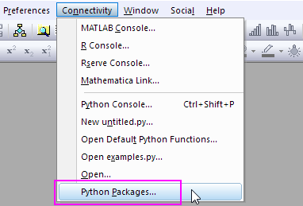
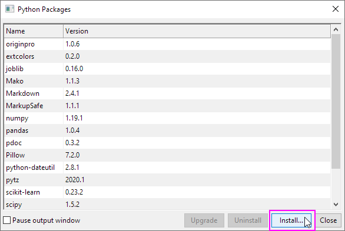
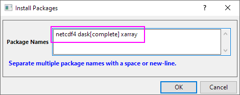
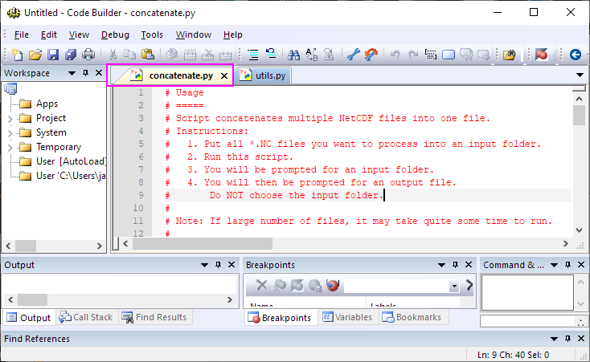
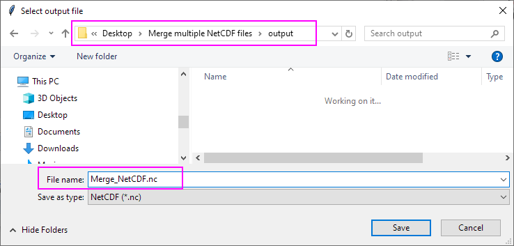

FAQ-1106 Kann ich mehrere NetCDF-Dateien zu einer zusammenfügen?
Merge-multiple-NetCDF-files
Letztes Update: 20.07.2021
- Wählen Sie Konnektivität: Python-Pakete ... im Menü.
- 
- Klicken Sie im Dialog Python-Pakete auf die Schaltfläche Installieren, um den Dialog Pakete installieren zu öffnen.
- 
- Geben Sie im Dialog Pakete installieren das folgende Skript ein. Klicken Sie auf OK, und die Pakete werden installiert.
netcdf4 dask[complete] xarray
- 
- Nachdem die Python-Pakete installiert sind, klicken Sie auf die Schaltfläche
 , um den Code Builder zu öffnen. Ziehen Sie die Datei concatenate.py per Drag&Drop in den Code Builder und drücken Sie dann die Taste F5.
, um den Code Builder zu öffnen. Ziehen Sie die Datei concatenate.py per Drag&Drop in den Code Builder und drücken Sie dann die Taste F5.- 
- Legen Sie im Dialog Eingabeordner auswählen den Ordner mit den zusammengefügten NetCDF-Dateien fest und klicken Sie auf die Schaltfläche Ordner auswählen.

- Legen Sie im Dialog Ausgabeordner auswählen den Ausgabeordnerpfad fest und geben Sie den neuen Namen für die zusammenfügende Datei ein. Klicken Sie dann auf die Schaltfläche Speichern.
- 
Wenn das Zusammenfügen erfolgreich war, wird der Hinweis Fertig！！！ (Done !!!) im Skriptfenster angezeigt. Sie können die neue Datei im festgelegten Ausgabeordner finden.
Schlüsselwörter:NetCDF